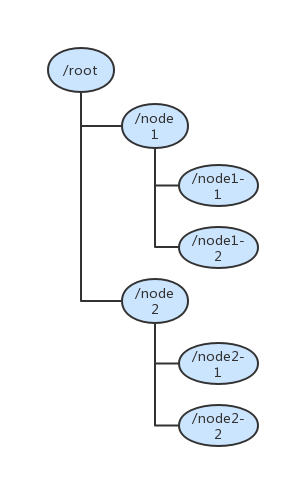

本篇主要分析zookeeper（以下简称ZK）的数据模型，包含命名空间、层次结构和节点类型等基本属性。ZK的命名空间与分布式的文件系统高度相似，唯一的区别是ZK的命名空间允许每个节点保存数据，就好比一个既是目录也是数据文件文件系统。
命名空间
ZK的命名空间规范是以斜杠分隔，所有的路径都是绝对路径（没有相对路径），任何unicode字符都可以作为节点名称，但根据官方文档的描述，必须遵守以下约束：
1 | ·The null character (\u0000) cannot be part of a path name. (This causes problems with the C binding.) |
ZK的视图的树形结构

节点
ZNode
ZK树中的每个节点都称之为ZNode，每个ZNode都可以写入数据，并且维护着一组stat信息（包含版本信息、权限信息，节点属性等），ZNode有以下几个类型：
- 持久节点（PERSISTENT）：一旦创建，不会因为客户端session断开而删除；
- 临时节点（EPHEMERAL）：客户端session断开后，自动删除，临时节点下不能创建子节点；
- 持久有序节点（PERSISTENT_SEQUENTIAL）：有序的持久节点；
- 临时有序节点（EPHEMERAL_SEQUENTIAL）：有序的临时节点；
有序节点的组成：名称末尾会加上一个顺序号，格式为%010d，表示长度10，左补0，例如node0000000001、node0000000002，利用这个特点可以实现分布式队列。
ZNode有以下特点：
- watch监听，客户端可以对ZNode进行监视，ZNode的事务操作（创建、修改、删除、新增子节点等）都会触发watch事件，向客户端发送通知，然后清除当前watch监听。
- 访问权限，存储在ZNode的数据都是以原子的方式进行读写，读取/写入的访问权限都由一个Access Control List（ACL）来控制是否有操作权限。
- 数据存储大小，ZK的设计初衷是用来作为协调服务，它虽然可以存储数据，但这并不是它的主要目的，因此他允许保存的数据大小上限是1M，这些数据一般为配置信息、状态信息等相对较小，不会占用太大的存储空间。如果非要存储大量的数据，建议把数据保存在大容量存储系统中（bulk storage system），例如NFS、HDFS，而ZK只保存这些数据的存储路径。
Stat
上文提到了ZNode维护了一组stat信息，这些信息由哪些组成？又有什么涵义呢？先来看看它的结构。
czxid：ZNode创建时的zxid（create）
mzxid：ZNode上次修改时的zxid（modify）
pzxid：ZNode子节点变更（新增、修改、删除）的zxid（parent）
ctime：节点创建的时间戳（Unix时间戳）
mtime：节点上次修改时间戳（Unix时间戳）
version：当前节点的版本，如果修改了当前节点保存的数据，每次更改都会自增
cversion：子节点的版本，子节点的事务提交都会引起该值自增
aversion：节点的ACL版本，修改节点的ACL权限，会引起该值自增
ephemeralOwner：如果节点是一个临时节点，该值就是对应的sessionId，持久节点该值为0
dataLength：数据字节长度
numChildren：子节点个数
这里有几个属性，记录着ZNode每次变化的时间。
- zxid（Zookeeper Transaction Id），它是一个unix时间戳，stat中保存了三个zxid，分别是czxid（创建）、mzxid（修改）、pzxid（子节点变更），在ZK中任何一次事务提交，都会将提交时的时间戳保存在对应的属性上。
- version，stat中保存了三个version，分别是version（当前节点版本，数据修改会导致自增）、cversion（子节点版本，子节点事务提交会导致自增）、aversion（当前节点ACL版本，ACL权限变更会导致自增）
会话
先看ZK官网的这张图，会话的开始和结束

客户端从连接成功到连接断开，中间保持的状态就是一个会话（Session），客户端一旦连上ZK server，server就会创建一个session和唯一的64位sessionId用来和客户端保持通信。从上图来看，客户端连接到服务端有以下几个状态：
CONNECTING，连接中
CONNECTED，已连接
AUTH_FAILED，认证失败
SESSION_EXPIRED，会话过期
DISCONNECTED，会话断开
CLOSED，会话关闭
客户端连接服务端时，会带一个超时时间的参数，表示多少时间（毫秒）内连上服务端（这个时间取决于zoo.cfg的tickTime配置，至少是2倍tickTime，最大不超过20倍tickTime）
监听
在ZK的节点上，任何读请求都可以设置一个watch监听，它有以下三个特点：
- 一次性，节点的数据变更会出发监听事件并发送通知到客户端，当再次修改这个节点的数据时，不会再次触发监听事件，除非再次设置监听。
- 发送客户端通知，监听事件是异步发送的，ZK可以保证发送到客户端的通知是有序的，例如客户端对某个ZNode设置监听事件，在这个请求到达服务端前，其他客户端修改了这个ZNode的数据，那么发送请求的客户端是无法感知的。即使设置了监听事件，其他客户端对数据的修改也无法立即通知到这个客户端，因此ZK只能保持数据的最终一致。
- watch数据监听，ZNode允许客户端对当前节点和子节点建立监听
可以通过API的三个方法监听ZNode的状态，getData()和exists()用来设置当前节点，getChildren()用来设置子节点监听，以下几个监听条件会触发事件监听：
Create event：调用exists()设置节点创建的监听事件
Delete event：调用exits()、getData()和getChildren()设置节点删除的监听事件
Change event：调用exits()、getData()设置节点数据变更的监听事件
Child event：调用getChildren()设置子节点相关的监听事件
具体的监听调用参见后续的API分析
访问权限
ZK使用ACL来控制对节点的访问，ACL与UNIX文件访问很类似，在了解这个之前，先了解一下ZK的授权，ZK授权命令scheme : id : permission，表示认证方式、用户和权限，Scheme有以下几种：
world：相当于所有客户端都能访问，只有一个id—anyone，命令方式为world:anyone
auth：不需要设置用户，相当于授权给有权限的所有用户
digest：使用用户名:密码方式（username:password）来认证，ZK内部使用SHA1和MD5算法来进行加密
ip：根据IP认证，只允许认证的IP进行操作
ACL支持的权限（Permission）有：
CREATE：创建当前节点下子节点的权限
READ：只读权限，包括遍历子节点
WRITE：写数据权限
DELETE：节点删除权限
ADMIN：设置权限的权限
具体如何设置权限参见后续的API分析